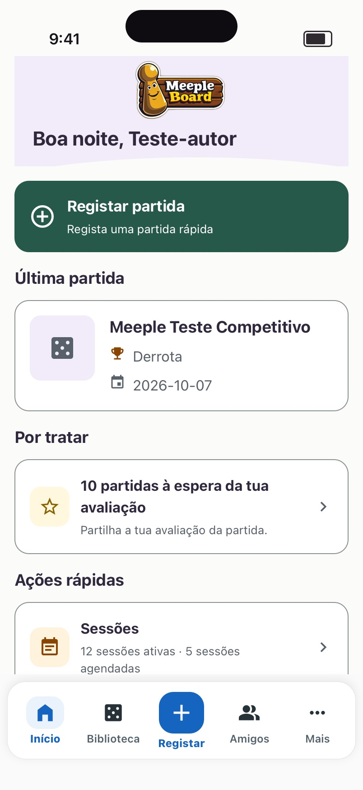
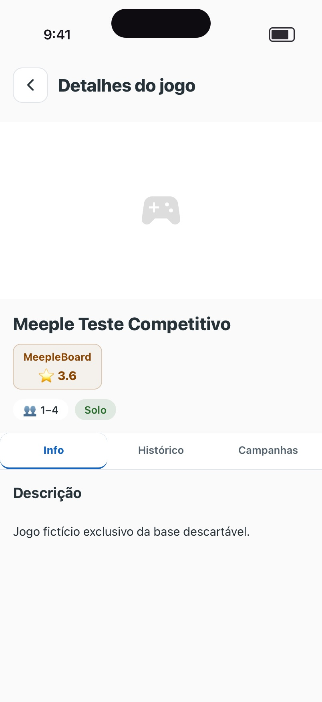
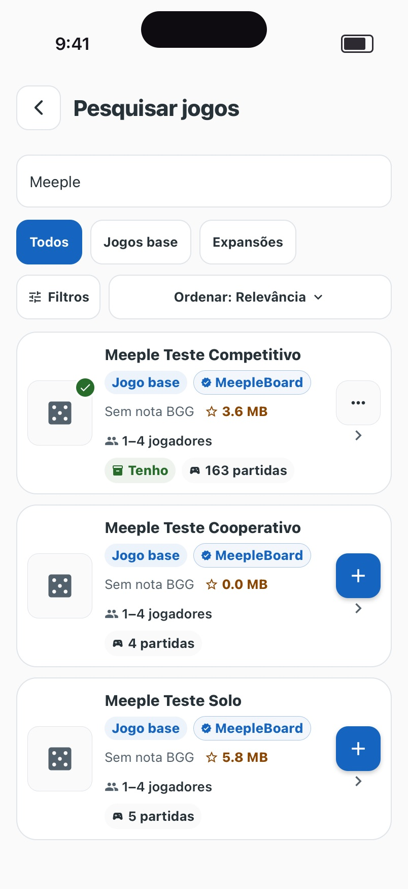
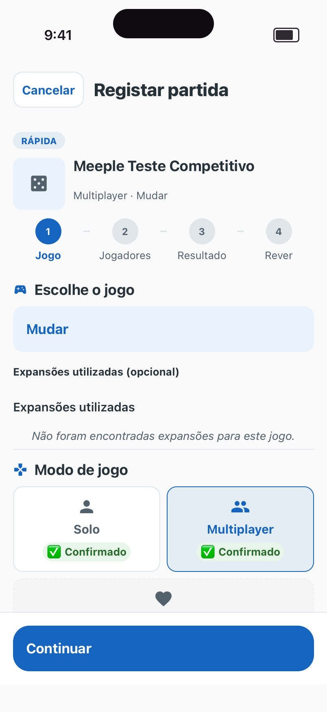
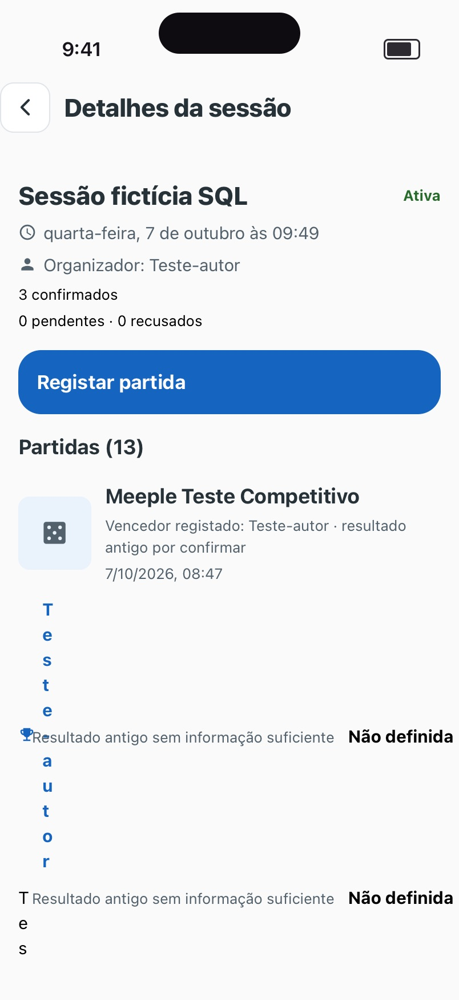
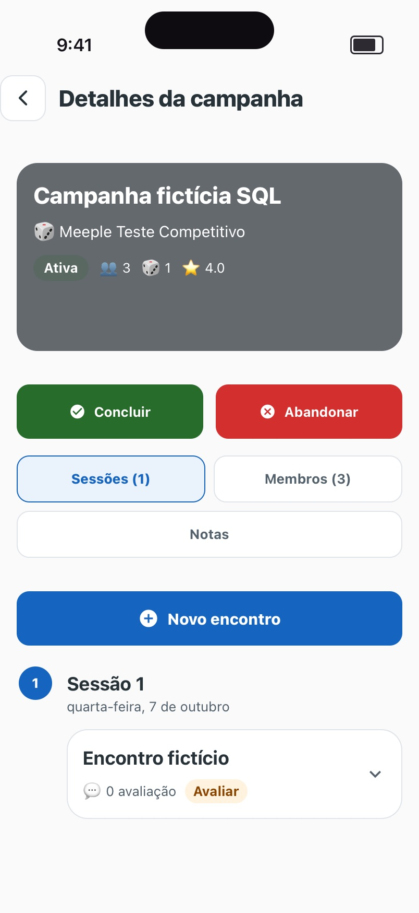
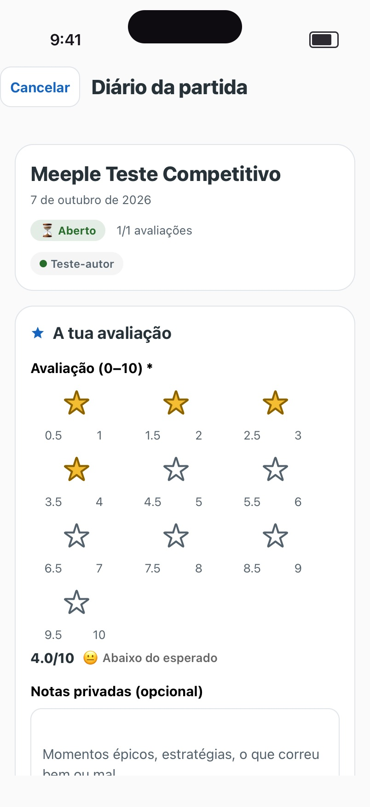
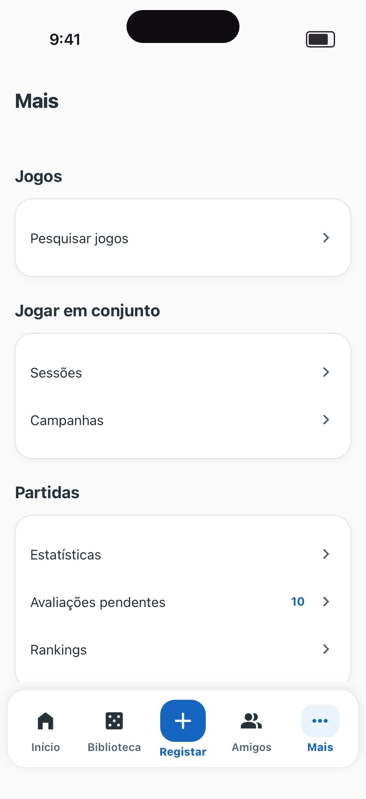
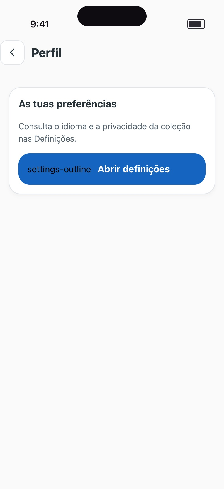

Uma proposta de navegação, linguagem visual e componentes para toda a app, a partir do trabalho já feito nas Estatísticas. Cada telemóvel é um ecrã a 402 × 874 pt com dados do ambiente de testes.
Os ecrãs “Hoje” são capturas dos componentes reais, renderizados com a ferramenta guardada em tools/visual-preview e respostas GET da API DeviceTests. Os ecrãs “Proposta” são maquetas. Nada foi alterado na app nesta etapa.
Percorri 41 ecrãs e passos com a conta de testes autor: Início, Biblioteca, pesquisa e detalhe de jogos, registo em quatro passos, detalhe de partida e diário, avaliações pendentes, sessões, criação e convites, campanhas, amigos, pedidos, Rankings, Mais, Perfil, Definições, Estatísticas e autenticação. Também revi a documentação de pendências (pendencias-funcionais.md) e de próximas etapas.
appTheme, uiStyles, clubTheme) e duas famílias de ícones. Os jogos aparecem com comando de consola em vez de dados ou peões.








Nenhuma funcionalidade se perde e nenhum contrato muda. Estas cinco mudanças alteram onde as coisas estão, ou ativam opções que hoje aparecem como “em breve”.
Registar partida fica a um toque a mais (dois em vez de um), em troca de Nova sessão e Adicionar jogo ficarem igualmente à mão. A folha abre já focada em Registar partida.
Alternativa: ＋ regista diretamente, e Nova sessão fica só em Jogar.
Liberta o separador para Jogar, que hoje está escondido. Os pedidos novos aparecem como contagem em Perfil e em “Por fazer” no Início.
Alternativa: manter Amigos como separador e abrir o Perfil pelo avatar no topo do Início.
Os Rankings passam a ser uma ordenação do catálogo (“Mais bem avaliados”, Geral ou Minha), com os mesmos dados.
O hook atual já envia o estado (Tenho, Quero, Já joguei), mas o modal mostra “Quero” e “Já joguei” como “em breve”. Proponho ativá-los se o servidor de testes os aceitar na criação. Se não aceitar, fica Tenho e o resto continua a mudar-se depois, como hoje.
Abandonar campanha, encerrar ou cancelar sessão, remover da coleção, remover amigo e terminar sessão passam para o fim das páginas ou para menus, em texto vermelho e com a confirmação que já existe. Deixam de ser botões sólidos no topo.
Estendo à app inteira os tokens e componentes das Estatísticas (src/features/statistics/ui), que passam para src/ui. A autenticação, já aprovada, adota apenas os mesmos tokens. Os três temas atuais são substituídos por um.
| Destaque | 34/40 bold |
| Título de página | 28/34 bold |
| Título de cartão | 22/28 bold |
| Secção, navegação | 17/22 semibold |
| Corpo, linhas, campos | 15/20 |
| Apoio, rótulos | 13/18 |
| Etiquetas, eixos | 12/16 |
| Margem lateral, padding | 16 |
| Entre secções / dentro de um grupo | 24 / 12 |
| Linhas de lista | ≥ 52 |
| Toque mínimo | 44 × 44 |
| Raios: cartão, controlo, destaque, folha | 14, 12, 16, 22 |
| Capas: lista, cabeçalho | 44, 96 |
Secção, Cartão, Linha, Destaque, Segmentado, Trio de resultados, Barras, Aviso “por fazer”, Estado vazio, Erro com Tentar novamente, Carregamento em esqueleto, Botão (principal, secundário, risco), Campo com rótulo, Pesquisa, Chip, Etiqueta de estado, Folha inferior, Barra de ação, Avatares sobrepostos e Capa.
O Início responde a “o que faço agora?”. Mostra primeiro o que está a acontecer (uma sessão ativa ou próxima, convites), depois o que espera por ti e por fim a última partida e um resumo do ano. As ações rápidas desaparecem, porque passam a estar no ＋ e nos separadores.
Um campo procura ao mesmo tempo na coleção e no catálogo. Cada resultado diz se já é teu. O detalhe do jogo passa a ter a ação principal (Adicionar ou o estado atual) e Registar partida, logo por baixo do nome. A folha de adição pede o estado e, para “Tenho”, o preço opcional.
O registo mantém os quatro passos e as regras atuais (participantes, modos, resultados explícitos, partilhados e por definir, pontuações com sinal, avaliação própria). Muda a apresentação: um passo por ecrã, a barra de progresso no topo, a ação fixa no fundo e o resultado escolhido junto de cada jogador. Depois de guardar, abre o detalhe da partida com “Avaliar agora”.
Jogar reúne sessões, convites, campanhas e partidas. No detalhe da sessão, o topo diz o estado e o que fazer a seguir, por esta ordem: responder ao convite, registar uma partida ou encerrar. As presenças aparecem agrupadas e a gestão fica no fim. Criar uma sessão é um formulário de uma página, com os amigos escolhidos em chips e o botão fixo no fundo.
O Perfil passa a ser útil: a identidade, “O teu ano” com acesso às Estatísticas completas, os amigos com os pedidos e as Definições. O perfil de um amigo começa pelo que fazem juntos, usa as mesmas regras de “por confirmar” das Estatísticas e põe as ações (convidar para sessão, o que podemos jogar, remover) num menu.
A 130 %, a barra inferior mantém os rótulos e cresce em altura. Linhas e cabeçalhos passam a coluna sem cortar nomes. Com o teclado aberto, a barra de ação sobe com ele e o conteúdo continua a deslizar.
Cada etapa termina com TypeScript, testes e capturas reais renderizadas pela ferramenta de comparação. A validação nativa no iPhone fica indicada à parte, numa ronda por etapa.
| Etapa | Conteúdo | Validação no iPhone |
|---|---|---|
| 0. Fundação | Tema único em src/ui (a partir de statistics/ui); cabeçalhos raiz, página e formulário; barra de ação; estados de carregamento, vazio e erro; formatação de datas e notas; nova barra inferior e folha ＋ com os destinos atuais; Mais redireciona para os novos lugares. Antigos caminhos preservados como aliases. | Separadores, ＋, voltar e gestos; áreas seguras |
| 1. Jogos | Coleção, pesquisa conjunta, catálogo com ordenação (Rankings), detalhe com ações, folha de adicionar e gerir. Corrigir “MB” e a capa vazia. | Procurar → consultar → adicionar → ver na coleção |
| 2. Partidas | Registo (quatro passos), detalhe da partida, diário com avaliação legível (meios pontos e zero), avaliações pendentes e a lista de partidas em Jogar. | Registar competitivo, solo e cooperativo; partilhada e por definir; teclado; avaliar |
| 3. Jogar | Lista de sessões, criação, convites, detalhe (corrigir o nome vertical), registo na sessão e campanhas com as ações de risco no fim. | Criar → convidar → responder com a segunda conta → registar → encerrar |
| 4. Perfil e pessoas | Perfil, amigos, pedidos, procurar pessoas, perfil do amigo, histórico conjunto, Definições e Terminar sessão. Estatísticas ligadas a partir do Perfil, sem mudanças. | Pedidos entre contas, privacidade, idioma, sair |
| 5. Início | Composição contextual com dados que já existem: sessões, avaliações pendentes, pedidos, última partida e resumo do ano. | Estados com e sem sessão ativa, sem dados, texto ampliado |
| 6. Autenticação | Só tokens comuns, rótulos que ativam os interruptores e pesquisa sem emoji. Direção já aprovada, sem redesenho. | Entrar, criar conta, recuperar palavra-passe |